Física Aplicada - TA
Table of Contents
DADOS
| CÓDIGO | GTOPEFISAPL00 - MC-FÍSICA APLICADA - T1 (ABERTA) |
| CURSO | CURSO SUPERIOR DE TECNOLOGIA EM ALIMENTOS |
| SEMESTRE | 2026.2 |
| LOCAL | Sala 26 - TA1V |
| CH | 60 / 60 |
| HORÁRIO | 4T123 (27/07/2026 - 15/12/2026) |
- EMENTA
- Medidas e conversões,
- Álgebra vetorial, Movimentos unidimensionais e bidimensionais,
- Fases da matéria,
- Propriedade térmica dos alimentos,
- Calorimetria nos alimentos, Propagação do calor nos alimentos,
- Níveis de energia dos alimentos,
- Óptica nos alimentos.
MEDIÇÕES E CONVERSÕES
Tópicos da ementa
- Medidas e conversões;
- instrumentos de medição;
- teoria do erro e análise estatística.
Explorando a densidade de algumas substâncias
Tabela de comparação entre valores de densidade de algumas substâncias
Valores em gramas por centímetro cúbico (g/cm³) à temperatura ambiente (~25°C), salvo indicação contrária.
| Substância | Líquido (g/cm³) | Sólido (g/cm³) | Observação no cotidiano |
|---|---|---|---|
| Água | 1,00 (a 4°C) | 0,92 (gelo) | Gelo flutua na água. Cubos de gelo boiam no copo. |
| Mercúrio | 13,6 (25°C) | 14,2 (-39°C) | Único metal líquido à temperatura ambiente. 1 L pesa 13,6 kg! |
| Óleo de cozinha | 0,92 | 0,91 | Flutua na água. Quando frita, fica por cima da água. |
| Álcool etílico | 0,79 | 0,81 | Mais leve que a água. Em drinques, fica na parte de cima. |
| Leite integral | 1,03 | ~1,05 | Mais denso que a água. O creme (gordura) sobe. |
| Mel | 1,42 | ~1,45 | Muito denso. Afunda na água. É pesado para o volume. |
| Gasolina | 0,74 | 0,78 | Mais leve que a água. Vazamentos boiam. |
| Sal (NaCl) | — | 2,16 | Só existe sólido. Afunda rapidamente na água. |
| Manteiga | 0,91 (derretida) | 0,86 | Sólida flutua na água (menos densa). |
| Ferro | 7,0 (1538°C) | 7,87 | Muito denso. Panela de ferro é pesada. |
| Chumbo | 10,7 (327°C) | 11,34 | Muito pesado. Bola de chumbo do tamanho de laranja pesa >5 kg. |
| Ouro | 17,3 (1064°C) | 19,3 | Um dos metais mais densos. Pepita pequena já é pesada. |
| Plástico (PE) | 0,79 (derretido) | 0,94 | Flutua na água. Garrafas PET boiam em rios. |
| Glicerina | 1,26 | 1,30 | Mais densa que a água. Usada em sabonetes e xampus. |
| Querosene | 0,81 | 0,84 | Menos denso que a água. Usado em lampiões. |
Observações Importantes
- REGRA GERAL
- A maioria das substâncias
aumentaa densidade ao solidificar. - Partículas se aproximam → volume diminui → densidade aumenta.
- Exemplo: ferro líquido (7,0) → ferro sólido (7,87)
- A maioria das substâncias
- Exceção: água
- Água sólida (gelo) é
menosdensa que a água líquida. - Por isso o gelo flutua.
- Isso é essencial para a vida nos oceanos: o gelo forma uma camada na superfície e protege a água abaixo.
- Água sólida (gelo) é
- Óleos e gorduras
- São sempre menos densos que a água.
- Óleo, manteiga, azeite flutuam na água.
- Por isso vemos manchas de óleo boiando.
- Mercúrio é extremamente denso
- 1 litro de mercúrio pesa 13,6 kg (água pesa 1 kg).
- Objetos de ferro (densidade 7,87)
flutuamno mercúrio!
- Temperatura e densidade
- Os valores são para
temperatura ambiente(~25°C), salvo indicação. - Em geral:
quente = menos denso(expande);frio = mais denso(contrai).
- Os valores são para
Noções sobre Teoria do Erro
Algarismos significativos
Matematicamente temos que
\( 1,900 = 1,90 = 1,9 \)
porém, no contexto das medidas, usamos a quantidade de casas após a virgula para indicar a precisão da medida (ou do resultado de um cálculo que se utiliza de medições)
Exemplo:
Um valor de comprimento expresso em:
a)
\( L = 1,900 \, m\)
indica que a precisão do instrumento é em milímetroe (mm);
b)
\( L = 1,90 \, m\)
indica que a precisão é em centímetros (cm);
c)
\( L = 1,9 \, m\)
indica que a precisão é em decímetros (dm).
Arredondamento numérico
Nesse contexto, podemos ter que arredondar valores após cálculos. Como exemplo, imagine que, após um cálculo, obtemos um valor com 5 casas decimais, mas queremos arredondar para duas. A regra é olhar para o número que será desprezado, verificando se
- é menor que 5
- é maior ou igual a 5
Exemplos:
- \( 1,78901 \rightarrow 1,79\)
- \( 1,78321 \rightarrow 1,78\)
- \( 1,78531 \rightarrow 1,79\)
Uma observação importante: lembre-se que no inglês, a função do ponto e da virgula em um número é diferente do português.
Exemplo:
Dois mil dólares: R$ \(2,000.00\)
Dois mil reais: U$ \(2.000,00\)
Teoria do erro
- O que é medir?
- É comparar uma quantidade com uma unidade padrão. Nenhuma medida é perfeita; toda medida tem um erro (incerteza) associado.
- Os três tipos de erros básicos:
- Erro de Resolução (limite do instrumento): É o menor valor que o instrumento consegue mostrar.
- Exemplo: Nossa régua media só até 1 mm; não dava para ver 0,5 mm. Por isso, já sabíamos que ali tinha uma incerteza.
- Erro Sistemático (o "vício"): É o erro que acontece sempre no mesmo sentido (para mais ou para menos) se não tomarmos cuidado.
- Exemplo: A paralaxe (olhar a régua de lado) ou o atrito do ar com o pêndulo. Esse erro prejudica a exatidão (deixa o resultado longe do valor verdadeiro).
- Erro Aleatório (o "acaso"): É aquele erro que varia para mais ou para menos, sem regra fixa.
- Exemplo: O tempo de reação do nosso dedo ao apertar o cronômetro. Cada um apertou num tempo diferente. Esse erro prejudica a precisão (deixa os resultados espalhados).
- Erro de Resolução (limite do instrumento): É o menor valor que o instrumento consegue mostrar.
- Como diminuir os erros?
- Depende do contexto das medições;
- Como fizemos isso nas medições de oscilação de um pêndulo simples?
- Definições matemáticas
Média aritmética
\(\bar{T} = \frac{1 }{N}\cdot\sum_{i=1}^N T_i \)
Desvio:
\( D = |T_i-\bar{T}| \)
Desvio médio
\( DM = \frac{1}{N} \cdot \sum_{i=1}^N |T_i-\bar{T}| \)
Desvio padrão
\( DP = \frac{1}{N} \cdot \sqrt{ \sum_{i=1}^N (T_i - \bar{T})^2} \)
Atividade prática
- Parte I - Medições das dimensões de um quadro
- Obter o valor das dimensões e área do quadro da sala;
- Valores e cálculo sem utilizar o conceito de algarismos significativos;
- Valores e cálculo utilizando o conceito de algarismos significativos.
- Parte II - Medidas simples do perído oscilações de um pêndulo
- Medições de uma única oscilação por vez;
- Medir 10 vezes;
- Comparar valores com os grupos dos colegas;
- Discussões sobre erros: evitáveis e não evitáveis.
- Parte III - Medicas mais elaboradas do período de oscilações de um pêndulo
- Medição de 10 oscilações para reduzir o erro;
- Conjunto de 10 valores;
- calcular média;
- calcular o desvio médio;
- calcular o desvio padrão;
- comparar resultados com os dos colegas;
- revisar conceitos e discutir resultados.
TÓPICOS EM MECÂNICA
Introdução
A mecânica é a área da física que estuda os movimentos de modo geral; desenvolvendo conceitos e estabelecendo princípios que buscam explicar por que e como os movimentos acontecem.
É uma área geral que pode ter várias aplicações e contendo várias subáreas, como: mecânica celeste, mecânica de corpos rígidos, mecânica de fluidos, mecânica de motores etc.
Animação do pêndulo de Newton.

Fonte: DemonDeLuxe (Dominique Toussaint), CC BY-SA 3.0, via Wikimedia Commons
Cinemática
Visão geral
A Cinemática é o estudo do movimento dos corpos sem se preocupar com a análise das suas causas. Nesse tópico iremos introduzir os conceitos básicos relacionados ao movimento como:
| Conceito | Descrição |
|---|---|
| Referencial | Ponto de referência (ponto zero). |
| Posição | posição de cada carro em relação ao referencial. |
| Deslocamento | Variação da posição em um certo intervalo de tempo. |
| Velocidade | Razão entre um deslocamento e intervalo de tempo correspondente. |
| Aceleração | Razão entre variação de velocidade e intervalo de tempo correspondente. |
Velocidade
Considere as imagens abaixo e tente identificar cada um dos conceitos descritos anteriormente.
Descrição do movimento de carros a partir de um referencial, em um certo instante de tempo \(t_0\).

Fonte: imagem criada pelo autor.
Por exemplo, na representção acima, as posições dos três carros são, respectivamente:
\[ -20 \, m \,, \qquad -10 \, m \qquad \text{e} \quad +15\,m\]
Descrição do movimento de carros a partir de um referêncial, em um certo instante posterior (final) \(t_f\).

Fonte: imagem criada pelo autor.
Sobre as duas figuras acima, podemos afirmar, entre outras coisas, que:
A posição do carro vermelho era de \(S_0=-10\,m\) no instante \(t_0\), e foi para \(S_f = -5\,m\) no instante \(t_f\).
Se, por exemplo, \(t_0 = 10\,s\) e \(t_f=12 s\); então, o intervalo de tempo em que ocorre o deslocamento é de \(\Delta t =12-10 =2s\).
A velocidade é a razão entre o deslocamento \(\Delta S = -5 -(-10) = 5\, m)\) e o intervalo de tempo correspondente. Assim,
\[ v = \frac{\Delta S}{\Delta t} = \frac{5\,m}{2\,s} = 2,5\, m/s\]
Aceleração
Quando há uma variação de velocidade (aumento ou redução) existe uma aceleração.
Variação de velocidade entre os instantes \(t_0=5\,s\) e \(t_f = 15\,s\).

Fonte: imagem criada pelo autor.
Considere agora que ocorreu um aumento de velocidade durante um intervalo de \(10 \, s\) (\(\Delta t = 15 - 5 = 10\,s\)). A velocidade foi de \(v_0 = 5\,m/s\) para \(v_f=55\,m/s\).
A aceleração, nesse caso, será:
\[ a = \frac{\Delta v}{\Delta t} = \frac{50m/s}{10s} = \frac{10m/s}{1s}\]
Escrevemos
\[ a = 10\,m/s^2 \]
Exemplo de movimento acelerado: Queda livre
Aceleração de \(10\,m/s^2\), para baixo. Ou seja, uma acrésimo de \(10m/s\) na velocidade a cada segundo.
Queda livre de um objeto a 5 m .

Fonte: imagem criada pelo autor.
Exemplo Movimento Uniformimente Variado (MUV)
Se a aceleração for constante, a variação do movimento (velocidade) é uniforme. Essa é uma classe de problemas que chamamos de Movimento Uniformemente Variado MUV.
Para esses problemas, podemos obter duas equações horárias (ou seja, funções do tempo)
- Uma para a velocidade (que resulta em uma função do
primeiro grau):
\( v = v_0 + a\cdot t\)
- Outra para a posição (que resulta em uma função do segundo grau):
\( s = s_0 + v_0 \cdot t +\frac{a}{2} \cdot t^2 \)
Leis de Newton
Introdução
As de Newton são a base para o estudo da mecânica, ela estabelece os princípios básicos para explicar como e por que os movimentos acontecem.
Antes de iniciar, vamos analisar dois conceitos importantes para entender as leis de Newton: referenciais e forças.
Referenciais
O movimento pode ser diferente para dois observadores diferentes.
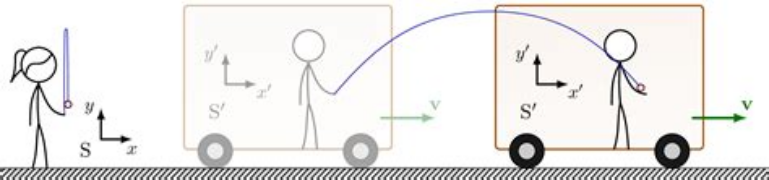
Fonte:
Força
- Forças de contato e forças de ação à distância
Exemplos de força: tração, magnética, gravitacional.

Fonte: Force.png: Penubagderivative work: Arnaud Ramey, Public domain, via Wikimedia Commons
- Forças de atrito
- Força de resistência do ar
A força de resistência do ar sustenta um paraquedas, por exemplo.

Fonte: Pearson Scott Foresman, Public domain, via Wikimedia Commons
- Força resultante
Força é uma grandeza que tem direção (chamamos de grandezas vetoriais) de modo que, quando duas ou mais forças atuam em um corpo, temos que considerar as direções dessas forças.
Assim, a força resultante é o resultado final da aplicação de todas essas forças.
A força resultante é o resultado líquido de todas as forças atuantes.
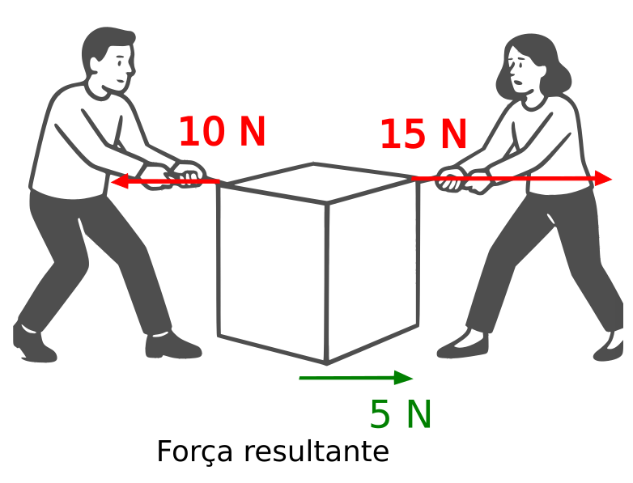
Fonte: criado pelo autor.

Primeiria Lei: Inércia
- Enunciado da lei
Todo objeto permanece em seu estado de repouso ou de velocidade constante em linha reta, a menos que uma força resultante não nula seja exercida sobre ele.
- Movimento em linha reta
Quando a bicicleta freia, a pessoa tende a continuar o movimento em linha reta.

- Inércia
- Inércia é como uma "preguiça" que objetos com massa tem de deixar o seu estado de repouso,ou de movimento uniforme.
- Massa é a quantidade de inércia de um corpo: Quanto maior a massa, mais difícil será para mudar o movimento do corpo.
Efeito da inércia: se a força for suave, a corda de cima se rompe, se a força for abrupta, a corda de baixo se rompe.

Fonte: MikeRun, CC BY-SA 4.0, via Wikimedia Commons
- Referenciais, força centrífuga.
Os Referenciais inerciais - aqueles que respeitam a primeira lei
Ou seja
Em referenciais não inerciais (referenciais acelerados) os corpos são acelerados mesmo na ausência de forças reais.
Como exemplo, do ponto de vista de quem está em movimento circular, existe uma aceleração centrífuga, a qual associamos uma força centrífuga. Mas essa força não existe de fato, ela se deve ao referencial estar acelerado (movimento circular)
Quem está dentro de um automóvel que faz uma curva, sente uma força para fora da curva.

Fonte: Thilp, CC0, via Wikimedia Commons
Por que Stephen Hawking está flutuando?

Fonte: Jim Campbell/Aero-News Network, CC BY 3.0, via Wikimedia Commons

Segunda Lei: Princípio fundamental da dinâmica
A aceleração de um objeto é diretamente proporcional à força resultante atuando sobre ele; tem o mesmo sentido que essa força e é inversamente proporcional à massa do objeto.
A aceleração é proporcional à força aplicada, e inversamente proporcional à massa do objeto.

- A aceleração é diretamente proporcional à força aplicada
A aceleração é inversamente propocional à massa
Matematicamente, temos:
\[ a = \frac{F}{m}\]
ou
\[ F = m a\]
Terceira Lei: Ação-reação
Sempre que um objeto exerce uma força sobre outro objeto, este outro objeto exerce uma força igual e oposta sobre o primeiro.
Ou
Para cada força de ação existe sempre uma força de reação, de mesmo módulo e orientação oposta,
Par ação-reação quando uma pessoa empurra outra.

Fonte: MikeRun, CC BY-SA 4.0, via Wikimedia Commons
Par ação-reação em forças de ação à distância, nesse exemplo, a força gravitacional.

Fonte: Svjo, CC BY-SA 4.0, via Wikimedia Commons
- Força Normal
Força Normal – Diagrama de forças em plano inclinado.

Fonte: Wikimedia Commons, CC BY-SA 4.0, via Wikimedia Commons


A unidade de medida Newton
As unidades básicas da mecânica são o metro (m) o segundo (s) e o kilograma (kg). Essas unidades são definidas em terms de algo literalmente físico, ou seja, definidas em contexto de laboratório.
Na prática, atualmente, o segundo é realizado por relógios atômicos de césio; o metro por lasers e interferometria; e o quilograma por balanças de Kibble (watt balance) associadas a padrões elétricos quânticos.
As demais unidades que veremos no contexto da mecânica como a unidade de força, o Newton (N) , e a unidade de energia, o Joule (J), são unidades derivadas das unidades básicas.
Para entender a definição do Newton, imagine uma força que consiga acelerar em \( 1m/s^2\) uma massa de \( 1k\,g \) teremos
\( F = m \cdot a = 1kg \cdot 1 m/s^2 \)
e a isso chamamos de 1N. Ou seja
\( 1N = 1kg \cdot 1 m/s^2 \) .
ou, simplesmente
\( N = kg \cdot m/s^2 \)
Assim, se uma força acelerar em \( 2m/s^2 \) uma massa de \( 1kg\). Temos \( 2N \), pois, para gerar o dobro de aceleração teremos que ter o dobro de força. Ou, se conseguirmos a mesma aceleração de \( 1m/s^2\) mas para uma massa de, digamos \( 3 kg\) teremos 3N, pela mesma lógica.
Algumas aplicações
Figura: Força gerando aceleração
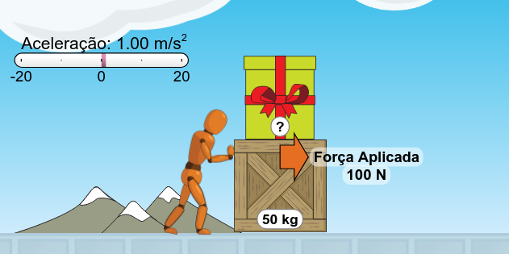
Fonte: PhET Interactive Simulations: Forces And Motion Basics,
University of Colorado Boulder, CC BY 4.0


A situação ilustrada acima mostra dois objetos sendo empurrados por uma força, desprezando-se o atrito. Qual é o valor da massa do presente?
Figura: Força gerando aceleração, mas em superfície com atrito.
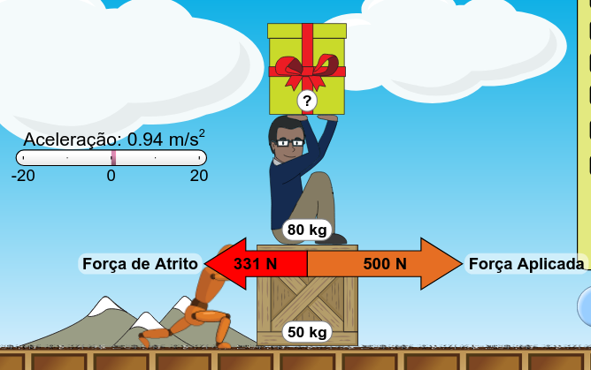
Fonte: PhET Interactive Simulations: Forces And Motion Basics,
University of Colorado Boulder, CC BY 4.0


Agora temos uma siuação onde a força de atrito é significativa. Qual é o valor da massa do presene nesse caso?
Figura: Massa e velocidade
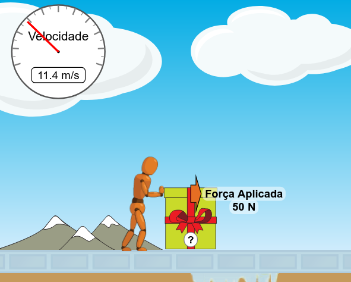
Fonte: PhET Interactive Simulations: Forces And Motion Basics,
University of Colorado Boulder, CC BY 4.0


Imagine agora que a velocidade aumenta de zero a \(10\,m/s\) em \(5\,s\). Qual é o valor da massa?
Energia Mecânica
Principio da conservação da energia
A energia é uma quantidade que se conserva, ou seja, não podemos criar nem destruir energia, apenas transformar de um tipo em outra.
Energia cinética
A energia associada ao movimento de um objeto de massa \(m\) com velocidade \(v\) é calculada pela expressão
\( E_c = \frac{m v^2}{2} \)
Energia potencial gravitacional
A energia associada a posição de um objeto, de massa \(m\), em uma altura \(h\), submetido a uma gravidade caracterizada pela aceleração \(g\) (na superfície da terra, usaremos o valor \(g = 10 m/s^2\)
\[E_g = m g h \]
Trabalho de uma força
A energia fornecida ao aplicar uma força \(F\) em um objeto, movendo-o na mesma direção da aplicação da força, por uma distância \(d\) é calculada por
\[W = F d\]
Dissipação de energia mecânica (atrito)
O trabalho exercido pela força de atrito pode ser calculado pela mesma equação anterior, mas, nesse caso, a força tem direção oposta ao deslocamento, e, por isso, o sinal negativo, indicando uma diminuição na energia mecânica total.
\[W = - F d\]
Limites de aplicação
As teorias das ciências naturais podem ser compreendidas como modelos aproximados da realidade. Elas descrevem a realidade em certos contextos com boa aproximação, porém, quando aproximamos aos seus limites de validade elas começam a gerar erros significativos na descrição dos fenômenos. Os limites da Mecânica Newtoniana levaram a duas novas teorias importantes para a física moderna.
Limite de altas velocidades: Mecânica Relativística
Quando temos velocidades próximas a da luz a mecânica newtoniana apresenta erros siginificativos e a teoria que evoluiu desse para explicar esse contexto é a Teoria da Relatividade Restrita de Einstein
Exemplos: elétrons em aceleradores, partículas cósmicas, GPS (correções relativísticas), astronomia de alta precisão.
Limite microscópico: Mecânica Quântica
Já quando lidamos com coisas muito pequenas, como sistemas atômicos ou subatômicos temos a Mecânica Quântica, onde outros formalismos generalizam a mecânica newtoniana.
Exemplos: elétron no átomo, fótons, efeito túnel, semicondutores, nanoestruturas, supercondutividade e superfluidez.
Gravidade forte: Relatividade Geral
A Mecânica Clássica usa a gravitação newtoniana, válida quando o campo gravitacional é fraco. Em campos intensos ou em altas precisões, é preciso usar a Relatividade Geral.
Exemplos: buracos negros, estrelas de nêutrons, ondas gravitacionais, cosmologia, precessão anômala de Mercúrio, GPS.
TÓPICOS EM TERMODINÂMICA - PARTE 1
Conceito de temperatura
A temperatura está relacionada a agitação a nível molecular. Ou seja, ela representa a energia do movimento das partículas (moléculas, ou átomos). Quanto maior a temperatura, maior será essa agitação.
Representação da temperatura de um Gás ideal .

Fonte: A. Greg (Greg L at English Wikipedia), Public domain, via Wikimedia Commons
Representação da vibração dos átomos em uma molécula devido à temperatura; neste exemplo, a proteína alfa-hélice .

Fonte: User:Greg L, CC BY-SA 3.0, via Wikimedia Commons
Escalas termométricas
Principais escalas de temperatura:
| Escala | Fusão da água | Ebulição da água |
|---|---|---|
| Celsius | \(0\,^\circ C\) | \(100\,^\circ C\) |
| Fahrenheit | \(32\,^\circ F\) | \(212\,^\circ F\) |
| Kelvin | \(273\,K\) | \(373\,K\) |
Comparação entre as principais escalas de temperatura

"Escalas de Temperatura"
by Mjmauler
is licensed under
CC BY-SA 4.0


 .
.
A escala Celsius é definida a partir de dois pontos fixos: adota-se 0 °C para a fusão (derretimento) do gelo e 100 °C para a ebulição da água, ambos à pressão de 1 atmosfera. O intervalo entre esses dois pontos é dividido em 100 partes iguais — razão do antigo nome "graus centígrados".
A escala Kelvin foi pensada para não ter valores negativos. Em vez de usar a fusão e a ebulição da água como referência, ela parte do zero absoluto, a menor temperatura possível, em que a agitação das partículas é mínima, e define uma escala em que não existem temperaturas abaixo de zero. Por isso a escala Kelvin é chamada de absoluta e não utiliza o símbolo de grau.
- Conversão de Celsius para Fahrenheit (e vice-versa)
\[ T_C = \frac{5}{9}\left( T_F - 32 \right)\]
- Conversão de Celsius para Kelvin
\[ T_k = T_C + 273\]
Transformações de energia
Propoagação de calor
- Condução
Calor é conduzido ponto a ponto, onde a energia sendo transferida por colisões a nível molecular.

Fonte: MikeRun, CC BY-SA 4.0, via Wikimedia Commons
- Convecção
Em fluidos, a diferença de temperatura causa regiões com diferentes densidades, devido à expansão térmica (relacionada à dilatação térmica).
Representação da convecção, onde o fluido aquecido sobe, enquanto o fluido frio desce.

Fonte: User:Oni Lukos, CC BY-SA 3.0, via Wikimedia Commons
- Irradiação
Irradiação (ou radiação térmica) é a transferência de calor por meio de ondas eletromagnéticas, que não necessitam de um meio material para se propagar — é assim que o calor do Sol atravessa o vácuo e chega até a Terra. Todo corpo com temperatura acima do zero absoluto emite radiação; quanto maior a temperatura, maior a quantidade de energia irradiada e menor o comprimento de onda predominante, de modo que um corpo muito quente pode emitir luz visível, enquanto um corpo à temperatura ambiente emite, principalmente, radiação infravermelha.
Exemplos no cotidiano vão do calor sentido na pele ao Sol ao funcionamento de fornos e aquecedores que aquecem objetos à distância, sem contato.
Na figura "Emissão de infra vermelho por um cachorro", cada ponto da imagem corresponde à radiação infravermelha emitida por aquela região do corpo do animal: a frequência (e a intensidade) dessa radiação indica a temperatura local, de modo que as áreas mais quentes aparecem destacadas. Esse é o mesmo princípio do termômetro infravermelho, que mede a temperatura de um objeto à distância, sem contato, a partir da radiação que ele emite.
O espectro eletromagnético em função da temperatura de emissão (entre outras informaçẽs).

Fonte: Khemis, CC BY-SA 4.0, via Wikimedia Commons

Essa figura reúne, em um mesmo painel, várias informações sobre o espectro eletromagnético: a faixa de temperatura de emissão (em Kelvin), associada a cada tipo de radiação, e as escalas de comprimento de onda e de frequência, permitindo comparar o tamanho das ondas e a energia envolvida em cada região do espectro — do infravermelho ao ultravioleta, por exemplo. Assim, ela ajuda a visualizar que corpos a diferentes temperaturas emitem radiação em diferentes comprimentos de onda e frequências.


.png){kind=link}


Energia Mecânica em energia elétrica
Um gerador elétrico transforma energia mecânica em energia elétrica. Numa usina hidrelétrica, a água em movimento gira uma turbina que, por sua vez, gira um ímã no interior de uma bobina e induz uma corrente elétrica (fenômeno da indução eletromagnética). Em resumo: o movimento (energia mecânica) é convertido em corrente elétrica (energia elétrica).
Gerador de corrente alternada: transformação de energia mecânica em energia elétrica.
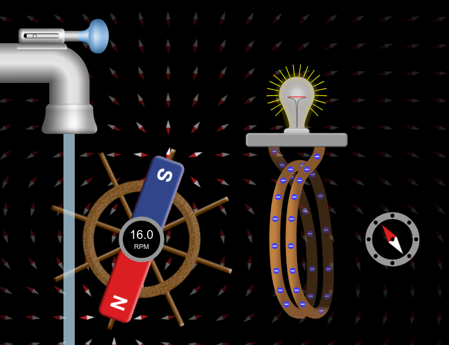
Fonte: PhET Interactive Simulations: Generator,
University of Colorado Boulder, CC BY 4.0


Energia Mecânica em Calor
O atrito entre duas superfícies transforma energia mecânica em energia térmica. Ao esfregar as mãos, por exemplo, elas se aquecem. Em escala microscópica, o atrito aumenta a agitação das partículas, o que percebemos como aumento de temperatura.
Atrito e calor: transformação de energia mecânica em energia térmica.
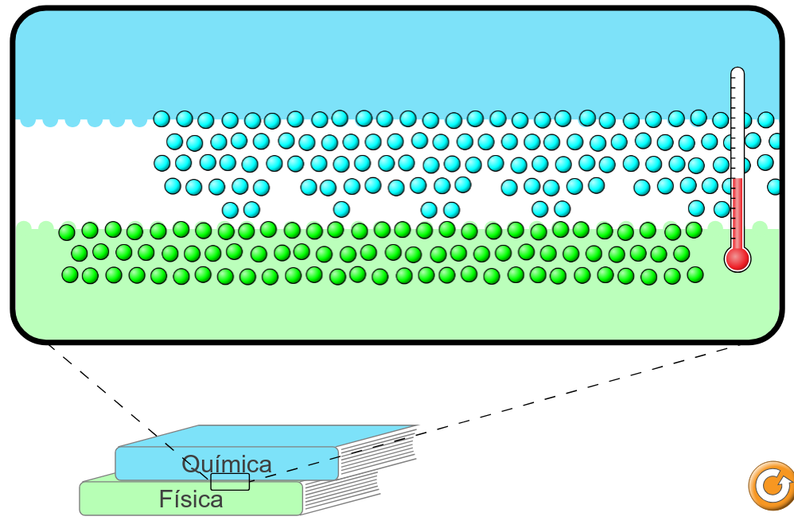
Fonte: PhET Interactive Simulations: Friction,
University of Colorado Boulder, CC BY 4.0


Energia química em calor
Nas reações químicas, a energia armazenada nas ligações químicas pode ser liberada na forma de calor. É o que ocorre na combustão (queima de gás, álcool, madeira) e também nas pilhas e baterias, que convertem energia química em energia elétrica e, por efeito Joule, em calor.
Exemplos:
- Combustão (queima de alimentos e de combustíveis);
- Pilhas e baterias;
- Metabolismo dos alimentos no corpo (respiração celular).
Energia térmica em ondas eletromagnéticas
Todo corpo com temperatura acima do zero absoluto emite radiação eletromagnética (irradiação). Quanto maior a temperatura, maior a quantidade de energia irradiada e menor o comprimento de onda predominante. É por isso que um corpo muito quente pode emitir luz visível, enquanto um corpo à temperatura ambiente emite, principalmente, radiação infravermelha.
Noções sobre Gás ideal
Um gás ideal é um modelo em que as partículas são consideradas pontos materiais que não interagem entre si, exceto por colisões perfeitamente elásticas. Nesse modelo, a pressão \(P\), o volume \(V\) e a temperatura absoluta \(T\) relacionam-se pela equação de estado:
\( PV = nRT \)
em que \(n\) é o número de mols e \(R = 8,31\,J/(mol \cdot K)\) é a constante universal dos gases. A equação mostra que, para uma quantidade fixa de gás, a alteração de uma dessas grandezas afeta as demais.
Simulação de um gás ideal: relação entre pressão, volume e temperatura.
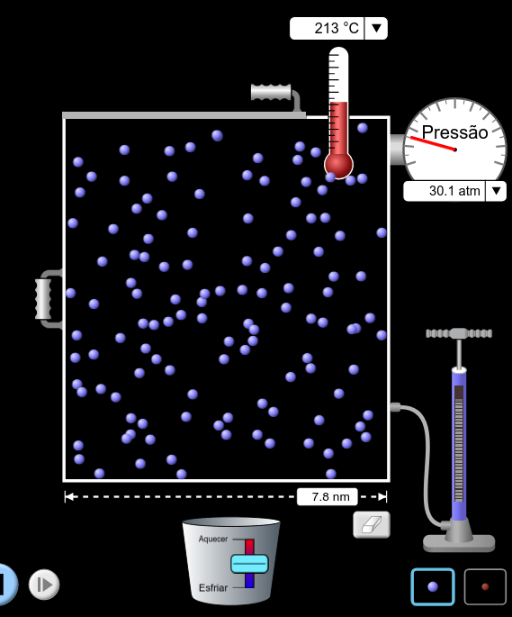
Fonte: PhET Interactive Simulations: Gas Properties,
University of Colorado Boulder, CC BY 4.0


Mudanças de Fase
A matéria pode se apresentar em diferentes fases (sólida, líquida e gasosa). As passagens de uma fase para outra são chamadas de mudanças de fase e ocorrem com troca de calor, mas com a temperatura permanecendo constante durante a transformação:
- Fusão: sólido \(\rightarrow\) líquido;
- Solidificação: líquido \(\rightarrow\) sólido;
- Vaporização: líquido \(\rightarrow\) gasoso;
- Condensação: gasoso \(\rightarrow\) líquido;
- Sublimação: sólido \(\rightarrow\) gasoso (e a ressublimação, o inverso).
O diagrama de fases representa, em um gráfico de pressão por temperatura, as condições em que cada fase é estável. As linhas que separam as regiões são as curvas de coexistência; o ponto em que as três fases coexistem é o ponto triplo, e o ponto além do qual não se distingue líquido e gás é o ponto crítico.
Simulação da mudança de fase da água em função da temperatura e da pressão.
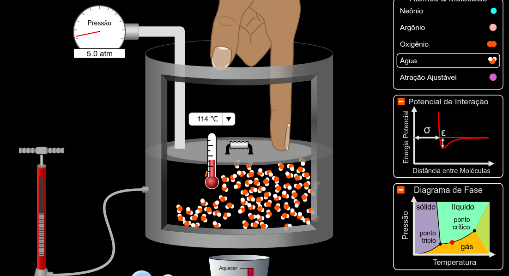
Fonte: PhET Interactive Simulations: States of Matter,
University of Colorado Boulder, CC BY 4.0


Diagrama de fases da água, com os pontos triplo, crítico e os pontos convencionais de solidificação e ebulição.
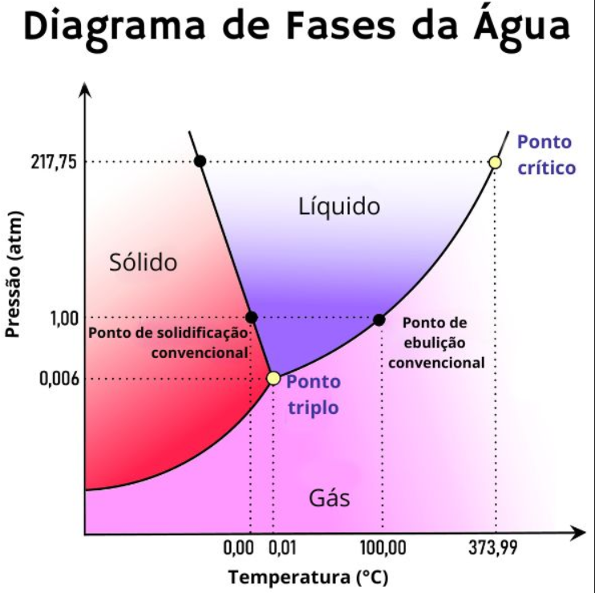
Fonte: imagem criada pelo autor.
No diagrama da água, o ponto triplo ocorre em \(0,01\,^\circ C\) e \(0,006\,atm\), condição em que gelo, água líquida e vapor coexistem. A \(1\,atm\), a fusão acontece a \(0\,^\circ C\) e a ebulição a \(100\,^\circ C\), os chamados pontos convencionais. O ponto crítico (\(373,99\,^\circ C\) e \(217,75\,atm\)) é o limite acima do qual não se distingue mais líquido e gás. Observe também que a curva sólido-líquido é inclinada para a esquerda: no caso da água, o aumento da pressão favorece a fase líquida, pois o gelo é menos denso que a água líquida.
Diagrama de fases típico de uma substância pura.

Fonte: Abacatabacaxi
(baseado em Maksim / Booyabazooka), CC BY-SA 3.0, via Wikimedia Commons


TÓPICOS EM TERMODINÂMICA - PARTE 2
Calor Latente e Calor sensível
Quando um corpo recebe ou cede calor, podem ocorrer duas situações:
Calor sensível: provoca variação de temperatura, sem mudança de fase. É calculado por
\[ Q = m \, c \, \Delta T \]
em que \(m\) é a massa, \(c\) o calor específico e \(\Delta T\) a variação de temperatura.
Calor latente: provoca mudança de fase, sem variação de temperatura. É calculado por
\[ Q = m \, L \]
em que \(L\) é o calor latente (de fusão, vaporização etc.), característico de cada substância.
Durante uma mudança de fase, toda a energia fornecida é usada para alterar o arranjo das partículas, e a temperatura permanece constante até que a transformação se complete.
Capacidade térmica e calor específico
A capacidade térmica \(C\) de um corpo é a quantidade de calor necessária para variar sua temperatura em \(1\,^\circ C\):
\[ C = \frac{Q}{\Delta T} \]
O calor específico \(c\) é a capacidade térmica por unidade de massa:
\[ c = \frac{C}{m} = \frac{Q}{m \, \Delta T} \]
Quanto maior o calor específico de uma substância, mais calor é necessário para aquecê-la. A água tem calor específico elevado, \(c \approx 1\,cal/(g \cdot ^\circ C) = 4180\,J/(kg \cdot K)\), por isso demora mais para aquecer e para esfriar do que o azeite, que possui calor específico menor.
Comparação entre o fornecimento de calor para água e azeite.
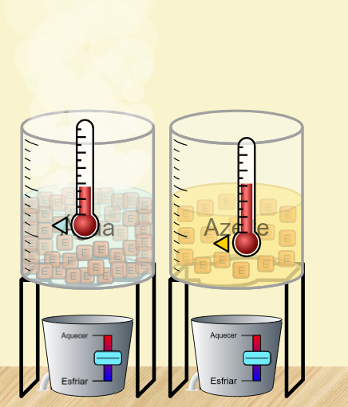
Fonte: PhET Interactive Simulations: Energy Forms and Changes,
University of Colorado Boulder, CC BY 4.0


Exemplos de aplicação: calor específico, capacidade térmica e calor latente
Antes dos exemplos, vale reunir alguns valores úteis. Lembre-se de que \(1\,cal \approx 4,18\,J\) e que, nas equações, a massa e o calor específico devem estar em unidades compatíveis.
| Substância | Calor específico |
|---|---|
| Água (líquida) | \(1,00\,cal/(g \cdot ^\circ C)\) |
| Gelo | \(0,50\,cal/(g \cdot ^\circ C)\) |
| Azeite | \(0,47\,cal/(g \cdot ^\circ C)\) |
| Alumínio | \(0,22\,cal/(g \cdot ^\circ C)\) |
| Ferro | \(0,11\,cal/(g \cdot ^\circ C)\) |
| Areia | \(0,20\,cal/(g \cdot ^\circ C)\) |
| Transformação | Calor latente |
|---|---|
| Fusão do gelo (\(0\,^\circ C\)) | \(L_f = 80\,cal/g\) |
| Vaporização da água (\(100\,^\circ C\)) | \(L_v = 540\,cal/g\) |
Capacidade térmica
A capacidade térmica \(C\) mede quanto calor um corpo precisa receber para variar sua temperatura em \(1\,^\circ C\):
\[ C = \frac{Q}{\Delta T} = m \, c \]
Exemplo 1 — panela de alumínio. Uma panela de alumínio tem massa \(m = 500\,g\) e calor específico \(c = 0,22\,cal/(g \cdot ^\circ C)\). Qual é a sua capacidade térmica e quanto calor ela absorve ao passar de \(20\,^\circ C\) para \(100\,^\circ C\)?
Dados: \(m = 500\,g\), \(c = 0,22\,cal/(g \cdot ^\circ C)\), \(\Delta T = 100 - 20 = 80\,^\circ C\).
Resolução:
\[ C = m \, c = 500 \cdot 0,22 = 110\,cal/^\circ C \] \[ Q = C \, \Delta T = 110 \cdot 80 = 8800\,cal \approx 8,8\,kcal \approx 3,7 \times 10^4\,J \]
Resposta: a panela tem capacidade térmica de \(110\,cal/^\circ C\) e absorve \(8,8\,kcal\) nesse aquecimento.
Interpretação: a cada \(1\,^\circ C\) de aquecimento, a panela "guarda" \(110\,cal\), que não chegam ao alimento. Uma panela mais pesada (maior massa, portanto maior \(C\)) demora mais para aquecer e também continua quente por mais tempo depois de desligada.
Calor específico
O calor específico \(c\) mede quanto calor cada grama (ou cada quilograma) de uma substância precisa receber para variar \(1\,^\circ C\):
\[ Q = m \, c \, \Delta T \]
Exemplo 1 — aquecendo água. Qual é a quantidade de calor necessária para aquecer \(2\,kg\) de água de \(20\,^\circ C\) até \(80\,^\circ C\)?
Dados: \(m = 2\,kg = 2000\,g\), \(c = 1\,cal/(g \cdot ^\circ C)\), \(\Delta T = 80 - 20 = 60\,^\circ C\).
Resolução:
\[ Q = m \, c \, \Delta T = 2000 \cdot 1 \cdot 60 = 120000\,cal = 120\,kcal \] \[ Q \approx 120 \cdot 4,18\,kJ \approx 5,0 \times 10^2\,kJ \]
Resposta: são necessárias \(120\,kcal\), ou aproximadamente \(500\,kJ\).
Exemplo 2 — água contra azeite. Fornecemos \(20\,kcal\) a \(2\,kg\) de água e a \(2\,kg\) de azeite. Qual dos dois aquece mais?
Dados: \(Q = 20\,kcal = 20000\,cal\) e \(m = 2000\,g\) nos dois casos; \(c_{água} = 1\,cal/(g \cdot ^\circ C)\) e \(c_{azeite} = 0,47\,cal/(g \cdot ^\circ C)\).
Resolução:
- Água: \(\Delta T = \dfrac{Q}{m \, c} = \dfrac{20000}{2000 \cdot 1} = 10\,^\circ C\)
- Azeite: \(\Delta T = \dfrac{Q}{m \, c} = \dfrac{20000}{2000 \cdot 0,47} \approx 21,3\,^\circ C\)
Resposta: o azeite sobe cerca de duas vezes mais que a água.
Relação com o dia a dia: como o azeite tem menor calor específico, a mesma quantidade de calor provoca uma variação de temperatura maior. Na fritura, o óleo pode ultrapassar \(150\,^\circ C\), enquanto a água em ebulição não passa de \(100\,^\circ C\) à pressão atmosférica. Essa é uma das razões pelas quais queimaduras causadas por óleo quente costumam ser mais graves.
Calor latente
O calor latente \(L\) é a quantidade de calor, por unidade de massa, trocada durante uma mudança de fase. Nessa situação, a temperatura permanece constante:
\[ Q = m \, L \]
Exemplo 1 — derretendo gelo. Qual é o calor necessário para derreter \(500\,g\) de gelo que está a \(0\,^\circ C\)?
Dados: \(m = 500\,g\), \(L_f = 80\,cal/g\).
Resolução:
\[ Q = m \, L_f = 500 \cdot 80 = 40000\,cal = 40\,kcal \approx 1,7 \times 10^2\,kJ \]
Resposta: são necessárias \(40\,kcal\) (cerca de \(167\,kJ\)).
Interpretação: durante toda a fusão, a temperatura permanece em \(0\,^\circ C\). O calor recebido serve para desfazer o arranjo cristalino do gelo, e não para aumentar a agitação das partículas.
Exemplo 2 — vapor e queimaduras. Qual é o calor necessário para vaporizar \(100\,g\) de água já a \(100\,^\circ C\)?
Dados: \(m = 100\,g\), \(L_v = 540\,cal/g\).
Resolução:
\[ Q = m \, L_v = 100 \cdot 540 = 54000\,cal = 54\,kcal \approx 2,3 \times 10^2\,kJ \]
Resposta: são necessárias \(54\,kcal\).
Comparação: a mesma massa de água líquida a \(100\,^\circ C\), ao esfriar até \(37\,^\circ C\) (temperatura aproximada do corpo humano), libera apenas \(Q = 100 \cdot 1 \cdot 63 = 6300\,cal \approx 6,3\,kcal\). O vapor que se condensa sobre a pele libera quase 9 vezes mais calor (\(54\,kcal\) contra \(6,3\,kcal\)), o que explica a gravidade das queimaduras por vapor.
Exemplo 3 — gelo resfriando uma bebida. Quanto calor \(100\,g\) de gelo a \(-10\,^\circ C\) absorve até se tornar água a \(20\,^\circ C\)? Considere \(c_{gelo} = 0,50\,cal/(g \cdot ^\circ C)\). O processo ocorre em três etapas:
- Aquecer o gelo de \(-10\,^\circ C\) até \(0\,^\circ C\): \(Q_1 = 100 \cdot 0,50 \cdot 10 = 500\,cal\)
- Derreter o gelo a \(0\,^\circ C\): \(Q_2 = 100 \cdot 80 = 8000\,cal\)
- Aquecer a água de \(0\,^\circ C\) até \(20\,^\circ C\): \(Q_3 = 100 \cdot 1 \cdot 20 = 2000\,cal\)
Resolução:
\[ Q_{total} = Q_1 + Q_2 + Q_3 = 500 + 8000 + 2000 = 10500\,cal \] \[ Q_{total} = 10,5\,kcal \approx 4,4 \times 10\,kJ \]
Resposta: o gelo absorve \(10,5\,kcal\) (cerca de \(44\,kJ\)).
Interpretação: essa mesma quantidade de calor é retirada da bebida, que esfria. A fusão responde por cerca de \(76\%\) do total (\(8000 / 10500\)): a maior parte do efeito de resfriamento vem da mudança de fase, e não do aquecimento do gelo.
APLICAÇÕES
Garrafa Térmica
A garrafa térmica é feita com paredes duplas de vidro (ou inox) e vácuo entre elas. O vácuo praticamente elimina a condução e a convecção, pois não há meio material para transportar o calor; as superfícies espelhadas, por sua vez, refletem a radiação térmica. Assim, os três processos de propagação do calor são reduzidos ao mesmo tempo, e o líquido interno permanece quente (ou frio) por mais tempo.
Aparelho Microondas
O forno micro-ondas produz ondas eletromagnéticas de alta frequência (micro-ondas) que fazem as moléculas polares, principalmente as de água, girar e vibrar rapidamente. Esse movimento molecular é o próprio aumento de agitação térmica, ou seja, a comida esquenta "por dentro", sem depender de condução a partir de uma superfície quente. Alimentos com pouca água (como pães secos) ou recipientes sem água aquecem menos, e materiais metálicos refletem as micro-ondas, por isso não devem ir ao forno.
Panela de pressão
Uma panela de pressão cozinha os alimentos mais rápido porque, ao lacrar a tampa, o vapor não escapa e a pressão interna aumenta. A água entra em ebulição quando sua pressão de vapor se iguala à pressão interna. Com a válvula mantendo a pressão em torno de \(2\,atm\), a água ferve a aproximadamente \(120\,^\circ C\) (contra \(100\,^\circ C\) ao nível do mar). Esse aumento de temperatura reduz o tempo de cozimento.
Refrigeradores
O refrigerador usa um fluido refrigerante que circula em um ciclo fechado. Na parte interna (congelador), ele evapora absorvendo calor do ambiente — graças ao calor latente de vaporização — e resfria o interior. Em seguida, o compressor comprime esse vapor, aumentando sua temperatura; na parte externa (atrás ou embaixo da geladeira), ele condensa e libera calor para o ambiente. O trabalho realizado pelo compressor (energia elétrica convertida em mecânica) é o que permite transportar calor de um lugar frio para um lugar quente, processo que não ocorre espontaneamente.
Relação entre brisa marítima e calor específico
As brisas marítimas resultam da diferença de calor específico entre a água e a terra. A água tem \(c \approx 1\,cal/(g \cdot ^\circ C)\), cerca de cinco vezes maior que o do solo e da areia (\(c \approx 0,2\,cal/(g \cdot ^\circ C)\)); assim, para a mesma quantidade de calor recebida do Sol, a terra se aquece mais rápido que o mar, e o mar demora mais tanto para aquecer quanto para esfriar. Durante o dia, o ar sobre a terra aquecida sobe e o ar mais frio vindo do mar ocupa seu lugar, gerando a brisa que sopra do mar para a terra. À noite, a terra esfria mais rápido que a água e o processo se inverte: o ar sobre o mar fica mais quente e sobe, e a brisa passa a soprar da terra para o mar. Nos dois casos, o mecanismo é a convecção, causada pela diferença de temperatura e de densidade do ar.
TÓPICOS EM ÓPTICA
Listas de exercícios
- Primeira Lista de Exercícios - (lista de revisão)
- Segunda Lista de Exercícios - (para entregar de forma física, em dupla, para entregar no dia 26 de agosto)
- Terceira Lista - Cinemática - (para entregar via SIGAA, manuscrita e digitalizada, até o dia 13/09)
- Quarta lista - Leis de Newton - (para enregar via SIGAA, manuscrito e digitalizado, até o dia 20/09)
- Quinta Lista - propagação de calor - Disponível no Google Forms
- Sexta Lista - gás ideal e mudança de fase - Será disponibilizado no Google Formas
- Sétima Lista